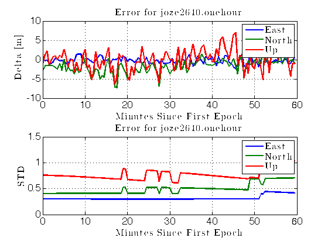
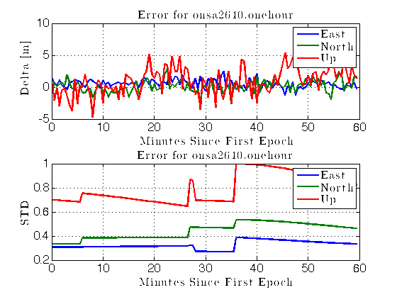
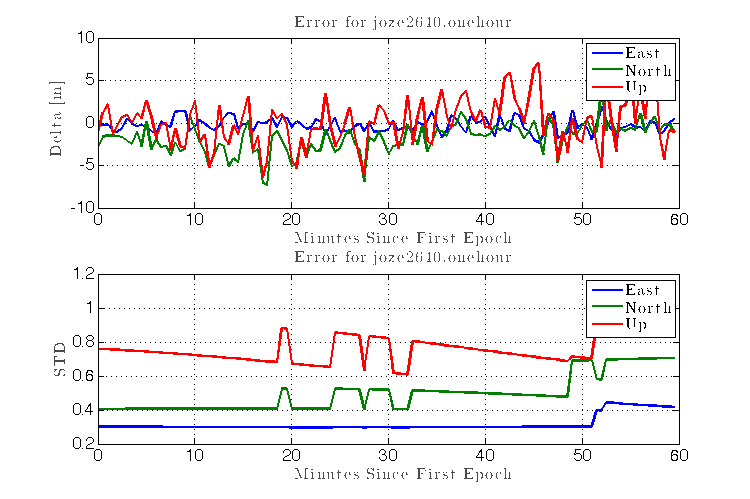
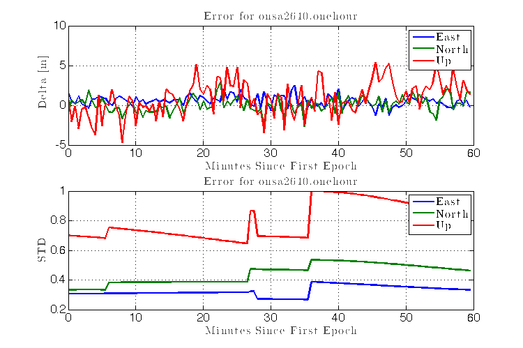

Contents
Questions to Answer (First for ease of grading)
type('answers.txt')
Solutions for the least squares
----------------------------joze2640.onehour-------------------------
East/Sig Estimate (m) -0.275 | Sigma (m) 0.301
North/Sig Estimate (m) -1.632 | Sigma (m) 0.405
Up/Sig Estimate (m) 1.227 | Sigma (m) 0.757
Clk/Sig Estimate (m) 199570.997 | Sigma (m) 0.500
----------------------------onsa2640.onehour-------------------------
East/Sig Estimate (m) 0.478 | Sigma (m) 0.306
North/Sig Estimate (m) 0.622 | Sigma (m) 0.334
Up/Sig Estimate (m) -2.056 | Sigma (m) 0.699
Clk/Sig Estimate (m) 620.163 | Sigma (m) 0.425
Setup Work Space
clc;clear all;close all
tic;
screen_size = get(0,'ScreenSize');
sw = screen_size(3);
sh = screen_size(4);
addpath HW8_files
soln_format = '| %2.0f | %15.3f | %7.3f | %12.3f | %6.3f | %9.3f | %3.2f | \t\n';
debug = 0;
Setup Problem
RINEX_FILES = {'joze2640.onehour','onsa2640.onehour'};
nav_msg = 'brdc2640.12n';
params.mu = 3.986005e14;
params.we = 7.2921151467e-5;
params.c = 299792458;
params.options=optimset('Display','off','TolFun',1e-10,'TolX',1e-10);
el_mask = 10;
Tzenith = [2.4086, 2.3858];
nav_data = read_GPSbroadcast(nav_msg);
Calculate Pre-Fit Residuals
for file_idx=1:length(RINEX_FILES)
rinex_file = RINEX_FILES{file_idx};
fprintf('Processing Rinex file %s\n', rinex_file)
Processing Rinex file joze2640.onehour
Processing Rinex file onsa2640.onehour
Read Observation Files, Sort Data
[ fid, rec_xyz, observables ] = read_rinex_header( rinex_file );
[rec_lla] = ecef2lla(rec_xyz');
xr = rec_xyz(1); yr = rec_xyz(2); zr = rec_xyz(3);
X = [xr, yr, zr, 1];
obs_data = read_rinex_obs3(rinex_file);
cols = obs_data.col;
fields = fieldnames(cols);
for kk=1:length(fields)
eval(cell2mat([fields(kk),'_col = cols.',fields(kk),';']));
end
[GPSSecAryUn,secs_idx] = unique(obs_data.data(:,TOW_col));
PRNS = obs_data.data(: , PRN_col);
GPSWeekAry = obs_data.data(: , WEEK_col);
GPSSecAry = obs_data.data(: , TOW_col);
Read 1000 lines
ans =
1024 8
Read 1000 lines
ans =
1238 13
Fetch/Compute Pseudorange Values
rho_obs = zeros(1, length(PRNS));
rho_model = rho_obs;
el = rho_obs;
res = rho_obs;
ionFree = rho_obs;
sat_prn = rho_obs;
epoch_iter = 0;
for sec_idx = secs_idx'
epoch_iter = epoch_iter + 1;
Calculate "Modeled" Pseudorange
GPS_SOW = GPSSecAry(sec_idx);
GPS_Week = GPSWeekAry(sec_idx);
params.Secs = GPS_SOW;
Nsats = sum(GPSSecAry == GPSSecAry(sec_idx));
iter = 0; clear H y
for sat = 1:Nsats
data_idx = sec_idx+sat-1;
iter = iter + 1;
PRN = obs_data.data(data_idx,PRN_col);
[R, rel_dt, satXYZ] = getSatGeomRange(rec_xyz', GPS_Week, GPS_SOW, PRN, nav_data, params);
xs = satXYZ(1); ys = satXYZ(2); zs = satXYZ(3);
[az, el(iter), r] = ecef2azelrange(satXYZ', rec_xyz);
if el(iter) < el_mask
iter=iter-1;
continue
end
rel_corr = rel_dt*params.c;
sat_clk_t_corr = getSatClockCorrection(GPS_Week, GPS_SOW, PRN, nav_data);
sat_corr = sat_clk_t_corr*params.c;
Tropo_corr = getTropoCorrection(Tzenith(file_idx), el(iter) );
rho_model(iter) = R - sat_corr + Tropo_corr + rel_corr;
Fetch Observed Pseudoranges
P2 = obs_data.data(data_idx,P2_col);
if sum(strcmp(observables,'P1'))>0
PorC1 = obs_data.data(data_idx,P1_col);
else
PorC1 = obs_data.data(data_idx,C1_col);
end
if P2==0
iter=iter-1;
continue
elseif PorC1==0
iter=iter-1;
continue
else
rho_obs(iter) = 2.5457*PorC1-1.5457*P2;
end
H(iter,:) = [(xr-xs)/R, (yr-ys)/R, (zr-zs)/R, 1];
y(iter) = rho_obs(iter) - rho_model(iter);
sat_prn(iter) = PRN;
if epoch_iter == 1 && file_idx == 1 && debug == 1
if sat == 1
fprintf('|_PRN_|________P3_______|___Geom Range___|____satClk____|__rel__|__Tropo___|___prefit___|\n')
end
fprintf(1,soln_format,PRN,...
rho_obs(iter), R,sat_corr,...
rel_corr,Tropo_corr,y(iter))
end
end
del_x(epoch_iter,:) = transpose((H'*H)\H'*y');
P = inv(H'*H).*(0.5)^2;
rec_xyz_adj = repmat(rec_xyz', epoch_iter, 1) - del_x(:,1:3);
rec_lla_adj = ecef2lla(rec_xyz_adj);
lat_station = rec_lla_adj(epoch_iter,1);
lon_station = rec_lla_adj(epoch_iter,2);
P(1:3,1:3) = rotateCovariance(P(1:3,1:3), lat_station,lon_station);
sigmas(epoch_iter,:) = sqrt(diag(P))';
key_epoch = 2;
if epoch_iter == key_epoch
fprintf('\n\n----------------------------%s-------------------------',rinex_file)
rec_xyz_adj = repmat(rec_xyz', epoch_iter, 1) - del_x(:,1:3);
rec_lla_adj = ecef2lla(rec_xyz_adj);
[de, dn, du] = ecef2enuv(del_x(key_epoch,1), ...
del_x(key_epoch,2), ...
del_x(key_epoch,3), ...
rec_lla_adj(key_epoch,1),rec_lla_adj(key_epoch,2));
fprintf('\nEast/Sig (m) %3.3f %3.3f\n',de,sigmas(epoch_iter,1))
fprintf('North/Sig (m) %3.3f %3.3f\n',dn,sigmas(epoch_iter,2))
fprintf('Up/Sig (m) %3.3f %3.3f\n',du,sigmas(epoch_iter,3))
fprintf('Clk/Sig (m) %5.3f %3.3f\n',del_x(key_epoch,4),sigmas(epoch_iter,4))
end
----------------------------joze2640.onehour-------------------------
East/Sig (m) -0.275 0.301
North/Sig (m) -1.632 0.405
Up/Sig (m) 1.227 0.757
Clk/Sig (m) 199570.997 0.500
----------------------------onsa2640.onehour-------------------------
East/Sig (m) 0.478 0.306
North/Sig (m) 0.622 0.334
Up/Sig (m) -2.056 0.699
Clk/Sig (m) 620.163 0.425
end
[de, dn, du] = ecef2enuv(del_x(:,1), ...
del_x(:,2), ...
del_x(:,3), ...
rec_lla_adj(:,1),rec_lla_adj(:,2));
[xe,yn,zu]=ecef2enu(del_x(:,1),del_x(:,2),del_x(:,3),...
rec_lla_adj(:,1),rec_lla_adj(:,2),rec_lla_adj(:,3),oblateSpheroid);
t = linspace(GPSSecAryUn(1),GPSSecAryUn(end),length(GPSSecAryUn));
t = (t-t(1))/60;
figure; subplot(2,1,1);
plot(t,[de,dn,du])
xlabel('Minutes Since First Epoch');ylabel('Delta [m]'); legend('East','North','Up')
title(['Error for ', rinex_file])
subplot(2,1,2)
plot(t,sigmas(:,1:3))
xlabel('Minutes Since First Epoch');ylabel('STD'); legend('East','North','Up')
title(['Error for ', rinex_file])
zs = rho_obs == 0;
rho_obs(zs) = []; rho_model(zs) = [];
clear del_x H
 
end
Clean, Reformat
figure_awesome
 
SUPPORTING FUNCTION - Homework8_main.m
type('Homework8_main.m')
%>>>>>>>>>>>>>>>>>>>>>>>>>>>>>>>>>>>>>>>>>>>>>>>>>>>>>>>>>
% Homework8_main.m
% Author : Zach Dischner
% Date : 11/3/2013
% Description : Matlab script for all calculations required for
% ASEN 5090 Homework 8
%
% __...____________________ ,
% `(\ [ ===NCC-1700===--|__|) ___..--"_`--.._____
% `"""""""""""""""""| |""` [_""_-___________"_/
% | | /..../`'-._.-'`
% ____| |__/::..'_
% |\ ".`"` '_____//\
% `"'-. """"" \\/
% `""""""""""`
% <<<<<<<<<<<<<<<<<<<<<<<<<<<<<<<<<<<<<<<<<<<<<<<<<<<<<<<<
%% Questions to Answer (First for ease of grading)
type('answers.txt')
%% Setup Work Space
clc;clear all;close all
tic;
screen_size = get(0,'ScreenSize');
sw = screen_size(3); % Screen Width
sh = screen_size(4); % Screen Height
addpath HW8_files
soln_format = '| %2.0f | %15.3f | %7.3f | %12.3f | %6.3f | %9.3f | %3.2f | \t\n';
debug = 0;
%% Setup Problem
%------Define Navigation and Observation File
RINEX_FILES = {'joze2640.onehour','onsa2640.onehour'};
nav_msg = 'brdc2640.12n';
%------Define Orbit determination parameters
params.mu = 3.986005e14; % Gravitational param [m^3/s^2]
params.we = 7.2921151467e-5; % Earth's rotation rate [rad/s]
%------Define speed of light
params.c = 299792458; % [m/s]
params.options=optimset('Display','off','TolFun',1e-10,'TolX',1e-10);
%------Elevation Mask
el_mask = 10; %degrees
%------Define Zenith Correction for each site
Tzenith = [2.4086, 2.3858]; %[m]
%------Read navigation message content
nav_data = read_GPSbroadcast(nav_msg); % Returns [n x 25] matrix of sat orbit information
% col1: prn, PRN number of satellite
% col2: M0, mean anomaly at reference time, rad
% col3: delta_n, mean motion difference from computed value, rad/s
% col4: ecc, eccentricity of orbit
% col5: sqrt_a, square root of semi-major axis, m^0.5
% col6: Loa, longitude of ascending node of orbit plane at weekly epoch, rad
% col7: incl, inclination angle at reference time, rad
% col8: perigee, argument of perigee, rad
% col9: ra_rate, rate of change of right ascension, rad/s
% col10: i_rate, rate of change of inclination angle, rad/s
% col11: Cuc, amplitude of the cosine harmonic correction term to the argument of latitude
% col12: Cus, amplitude of the sine harmonic correction term to the argument of latitude
% col13: Crc, amplitude of the cosine harmonic correction term to the orbit radius
% col14: Crs, amplitude of the sine harmonic correction term to the orbit radius
% col15: Cic, amplitude of the cosine harmonic correction term to the angle of inclination
% col16: Cis, amplitude of the cosine harmonic correction term to the angle of inclination
% col17: Toe, reference time ephemeris (seconds into GPS week)
% col18: IODE, issue of data (ephemeris)
% col19: GPS_week, GPS Week Number (to go with Toe)
% col20: Toc, time of clock
% col21: Af0, satellite clock bias (sec)
% col22: Af1, satellite clock drift (sec/sec)
% col23: Af2, satellite clock drift rate (sec/sec/sec)
% col24: blank (zero)
% col25: health, satellite health (0=good and usable)
%% Calculate Pre-Fit Residuals
for file_idx=1:length(RINEX_FILES)
rinex_file = RINEX_FILES{file_idx};
fprintf('Processing Rinex file %s\n', rinex_file)
%% Read Observation Files, Sort Data
%------Read a-priori receiver position from header of RINEX obs file
[ fid, rec_xyz, observables ] = read_rinex_header( rinex_file );
[rec_lla] = ecef2lla(rec_xyz');
%------Form least squares like variables
xr = rec_xyz(1); yr = rec_xyz(2); zr = rec_xyz(3);
X = [xr, yr, zr, 1];
%------Read Observation file
obs_data = read_rinex_obs3(rinex_file);
cols = obs_data.col; % Structure of column index descriptions
%------Make nice column addressing variables (P1_col, P2_col ... etc)
fields = fieldnames(cols);
for kk=1:length(fields)
eval(cell2mat([fields(kk),'_col = cols.',fields(kk),';']));
end
%------Only look at first epoch
[GPSSecAryUn,secs_idx] = unique(obs_data.data(:,TOW_col));
PRNS = obs_data.data(: , PRN_col);
GPSWeekAry = obs_data.data(: , WEEK_col);
GPSSecAry = obs_data.data(: , TOW_col);
%% Fetch/Compute Pseudorange Values
%------Allocate
rho_obs = zeros(1, length(PRNS));
rho_model = rho_obs;
el = rho_obs;
res = rho_obs;
ionFree = rho_obs;
sat_prn = rho_obs;
epoch_iter = 0;
for sec_idx = secs_idx'
epoch_iter = epoch_iter + 1;
%% Calculate "Modeled" Pseudorange
%------Setup Range Finding
GPS_SOW = GPSSecAry(sec_idx);
GPS_Week = GPSWeekAry(sec_idx);
params.Secs = GPS_SOW; %(GPS_Secs(1)) % Seconds used to calculate seconds since epoch
%------Iterate over epoch satellite data
Nsats = sum(GPSSecAry == GPSSecAry(sec_idx));
iter = 0; clear H y
for sat = 1:Nsats
data_idx = sec_idx+sat-1;
iter = iter + 1;
PRN = obs_data.data(data_idx,PRN_col);
%------Calculate Geometric Range
[R, rel_dt, satXYZ] = getSatGeomRange(rec_xyz', GPS_Week, GPS_SOW, PRN, nav_data, params);
xs = satXYZ(1); ys = satXYZ(2); zs = satXYZ(3);
%------Check Elevation Angle
[az, el(iter), r] = ecef2azelrange(satXYZ', rec_xyz);
if el(iter) < el_mask
iter=iter-1;
continue
end
rel_corr = rel_dt*params.c;
%------Get clock correction
sat_clk_t_corr = getSatClockCorrection(GPS_Week, GPS_SOW, PRN, nav_data);
%------Get Satellite Correction
sat_corr = sat_clk_t_corr*params.c;
%------Get Tropospheric Correction
Tropo_corr = getTropoCorrection(Tzenith(file_idx), el(iter) );
rho_model(iter) = R - sat_corr + Tropo_corr + rel_corr;
%% Fetch Observed Pseudoranges
%------Get Observed pseudorange
P2 = obs_data.data(data_idx,P2_col);
if sum(strcmp(observables,'P1'))>0
%------Retrieve P1 as 2nd freq pseudorange
PorC1 = obs_data.data(data_idx,P1_col);
% rho_obs(iter) = P1;
else
%------Retrieve C1 as 2nd freq pseudorange
PorC1 = obs_data.data(data_idx,C1_col);
% rho_obs(iter) = C1;
end
%------Use ONLY ionosphere free. Uncomment linesto use what data we have
if P2==0
iter=iter-1;
continue
% rho_obs(iter) = PorC1;
elseif PorC1==0
iter=iter-1;
continue
% rho_obs(iter) = P2;
else
rho_obs(iter) = 2.5457*PorC1-1.5457*P2;
end
%------Populate Least Squares Variables
H(iter,:) = [(xr-xs)/R, (yr-ys)/R, (zr-zs)/R, 1]; %??? What about clock???
% same as (rec_xyz' - satXYZ)/R
y(iter) = rho_obs(iter) - rho_model(iter);
sat_prn(iter) = PRN;
if epoch_iter == 1 && file_idx == 1 && debug == 1
if sat == 1
fprintf('|_PRN_|________P3_______|___Geom Range___|____satClk____|__rel__|__Tropo___|___prefit___|\n')
end
fprintf(1,soln_format,PRN,...
rho_obs(iter), R,sat_corr,...
rel_corr,Tropo_corr,y(iter))
end
end % End Satellite Iteration
%------Obtain least squares correction
del_x(epoch_iter,:) = transpose((H'*H)\H'*y');
P = inv(H'*H).*(0.5)^2;
%------Rotate
rec_xyz_adj = repmat(rec_xyz', epoch_iter, 1) - del_x(:,1:3);
rec_lla_adj = ecef2lla(rec_xyz_adj);
lat_station = rec_lla_adj(epoch_iter,1);
lon_station = rec_lla_adj(epoch_iter,2);
P(1:3,1:3) = rotateCovariance(P(1:3,1:3), lat_station,lon_station);
sigmas(epoch_iter,:) = sqrt(diag(P))';
key_epoch = 2;
if epoch_iter == key_epoch
fprintf('\n\n----------------------------%s-------------------------',rinex_file)
rec_xyz_adj = repmat(rec_xyz', epoch_iter, 1) - del_x(:,1:3);
rec_lla_adj = ecef2lla(rec_xyz_adj);
[de, dn, du] = ecef2enuv(del_x(key_epoch,1), ...
del_x(key_epoch,2), ...
del_x(key_epoch,3), ...
rec_lla_adj(key_epoch,1),rec_lla_adj(key_epoch,2));
fprintf('\nEast/Sig (m) %3.3f %3.3f\n',de,sigmas(epoch_iter,1))
fprintf('North/Sig (m) %3.3f %3.3f\n',dn,sigmas(epoch_iter,2))
fprintf('Up/Sig (m) %3.3f %3.3f\n',du,sigmas(epoch_iter,3))
fprintf('Clk/Sig (m) %5.3f %3.3f\n',del_x(key_epoch,4),sigmas(epoch_iter,4))
end
end % End time iteration
[de, dn, du] = ecef2enuv(del_x(:,1), ...
del_x(:,2), ...
del_x(:,3), ...
rec_lla_adj(:,1),rec_lla_adj(:,2));
% or...
[xe,yn,zu]=ecef2enu(del_x(:,1),del_x(:,2),del_x(:,3),...
rec_lla_adj(:,1),rec_lla_adj(:,2),rec_lla_adj(:,3),oblateSpheroid);
t = linspace(GPSSecAryUn(1),GPSSecAryUn(end),length(GPSSecAryUn));
t = (t-t(1))/60;
figure; subplot(2,1,1);
plot(t,[de,dn,du])
xlabel('Minutes Since First Epoch');ylabel('Delta [m]'); legend('East','North','Up')
title(['Error for ', rinex_file])
subplot(2,1,2)
plot(t,sigmas(:,1:3))
xlabel('Minutes Since First Epoch');ylabel('STD'); legend('East','North','Up')
title(['Error for ', rinex_file])
% ecef2enuv()
%------Remove data with '0' observation
zs = rho_obs == 0;
rho_obs(zs) = []; rho_model(zs) = [];
clear del_x H
end % End Rinex File Iteration
%% Clean, Reformat
figure_awesome
%% SUPPORTING FUNCTION - Homework8_main.m
type('Homework8_main.m')
%% SUPPORTING FUNCTION - getSatGeomRange.m
type('getSatGeomRange.m')
%% SUPPORTING FUNCTION - date2GPSTime.m
type('date2GPSTime.m')
%% SUPPORTING FUNCTION - findNearestEphem.m
type('findNearestEphem.m')
%% SUPPORTING FUNCTION - calculateSatellitePosition.m
type('calculateSatellitePosition.m')
%% SUPPORTING FUNCTION - findFirstEpoch.m
type('findFirstEpoch.m')
%% SUPPORTING FUNCTION - getSatClockCorrection.m
type('getSatClockCorrection.m')
%% SUPPORTING FUNCTION - date2GPSTime.m
type('GPSTime2Date.m')
%% SUPPORTING FUNCTION - getTropoCorrection.m
type('getTropoCorrection.m')
fprintf('\nSim took %3.1f seconds to run\n',toc)
SUPPORTING FUNCTION - getSatGeomRange.m
type('getSatGeomRange.m')
%>>>>>>>>>>>>>>>>>>>>>>>>>>>>>>>>>>>>>>>>>>>>>>>>>>>>>>>>>
% getSatGeomRange.m
% Author : Zach Dischner
% Date : 10/22/2013
% Description : calculate satellite position from GPS ephemeris dataset
%
%
% __...____________________ ,
% `(\ [ ===NCC-1700===--|__|) ___..--"_`--.._____
% `"""""""""""""""""| |""` [_""_-___________"_/
% | | /..../`'-._.-'`
% ____| |__/::..'_
% |\ ".`"` '_____//\
% `"'-. """"" \\/
% `""""""""""`
% Inputs : rStation - GPS Rx [x,y,z] coords in ECEF meters
% GPS_Weeks - GPS Week time
% GPS_SOW - Seconds into week
% PRN - Satellite PRN
% nav_data - nx25 array of sat data from broadcase
% ephemeris
% params - structure containing keplarian specs and extra
% calculations for sat position
%
% Outputs : R - Geometric Range value, in meters
% rel_dt - clock offset due to relativity (in seconds)
% rSat - 3d ECI coordinates of satellite [x,y,z]
%
% History October 11 2013 - First Rev
% October 24 2013 - Reformatted output to [R,tk]
% - Added check for time field in params,
% other that that in the ephemeris data
% October 30 2013 - Reformatted output to include XYZ sat
% position
%
% <<<<<<<<<<<<<<<<<<<<<<<<<<<<<<<<<<<<<<<<<<<<<<<<<<<<<<<<
function [R, rel_dt, rSat] = getSatGeomRange(rStation, GPS_Weeks, GPS_SOW, PRN, nav_data, params)
%------Find Nearest Ephemeris
[epochData,rows] = findNearestEphem(PRN, GPS_Weeks, GPS_SOW, nav_data);
SOW_col = 20;
% Single Row in this case
%------Get Sat Position from Ephemeris data
[rSat,rel_dt] = calculateSatellitePosition(epochData, params);
%------Set up convergence limits
R = 0;
conv_limit = 1e-15;
max_iters = 200;
iter = 1;
%------Iterate and converge on Geometric Range
while(1)
%------Calculate Geometric Range
Rtmp = norm( rSat - rStation );
%------Check for Convergence
if(abs(Rtmp - R) < conv_limit)
break
end
%------Assign new Range Value now that criterion are passed
R = Rtmp;
%------Check for iteration limit
if(iter > max_iters)
fprintf(2,'YO BRO!! Range Calculation not converging!\n')
break
end
%------Increase iteration count
iter = iter + 1;
%------Calculate 'Tt', time of transmission
dt = R/params.c;
% Tr = epochData(SOW_col);
Tr = GPS_SOW;
Tt = Tr - dt;
%------Recalculate Satellite position
params.Secs = Tt;
% to use new time value
[rSat,rel_dt,params] = calculateSatellitePosition(epochData,params);
%------Rotate Sat position at time Tr (account for earth's rotation)
phi = params.we*dt;
rSat = transpose(rot3(phi)*rSat');
end
rmfield(params,'E_guess');
SUPPORTING FUNCTION - date2GPSTime.m
type('date2GPSTime.m')
%>>>>>>>>>>>>>>>>>>>>>>>>>>>>>>>>>>>>>>>>>>>>>>>>>>>>>>>>>
% date2GPSTime.m
% Author : Zach Dischner
% Date : 10/11/2013
% Description : Convert a date type object into [GPS_Weeks, GPS_SOW] time
%
%
% __...____________________ ,
% `(\ [ ===NCC-1700===--|__|) ___..--"_`--.._____
% `"""""""""""""""""| |""` [_""_-___________"_/
% | | /..../`'-._.-'`
% ____| |__/::..'_
% |\ ".`"` '_____//\
% `"'-. """"" \\/
% `""""""""""`
% Inputs : utcDate - Satellite PRN number
%
% Outputs : [GPS_Weeks, GPS_SOW]-weeks and seconds of week
%
% TODOS : Vectorize!
% <<<<<<<<<<<<<<<<<<<<<<<<<<<<<<<<<<<<<<<<<<<<<<<<<<<<<<<<
function [GPS_Weeks, GPS_SOW] = date2GPSTime(utcDate)
gps_week_start = 'January 6 1980 00:00:00';
modnum = 0; % modnum = 0 for no modulo
tmp = mod((datenum(utcDate) - datenum(gps_week_start))/7,modnum); % (Difference in days)/7 = difference in weeks
GPS_Weeks = floor(tmp);
GPS_SOW = round((tmp-GPS_Weeks)*7*24*3600);
SUPPORTING FUNCTION - findNearestEphem.m
type('findNearestEphem.m')
%>>>>>>>>>>>>>>>>>>>>>>>>>>>>>>>>>>>>>>>>>>>>>>>>>>>>>>>>>
% findNearestEmph.m
% Author : Zach Dischner
% Date : 10/11/2013
% Description : Function to return all emphimeris data from a nav data
% array
%
%
% __...____________________ ,
% `(\ [ ===NCC-1700===--|__|) ___..--"_`--.._____
% `"""""""""""""""""| |""` [_""_-___________"_/
% | | /..../`'-._.-'`
% ____| |__/::..'_
% |\ ".`"` '_____//\
% `"'-. """"" \\/
% `""""""""""`
% Inputs : PRN - Satellite PRN number
% GPSWeeks - GPS week number (modded or no?)
% GPSSOW - GPS Seconds of week
% navData - A full array of all emphimeris data, fetched
% from navigation file
% Outputs : emphData - Single row (struct?) of emphemeris data per
% sat PRN at time [gps_weeks, gps_seconds
%
% History Oct 11 2013 - First Version
% Oct 22 2013 - Added return for rownums
% Oct 24 2013 - Changed PRN matching to ismember(), to allow
% for array matching of PRNs
% Oct 31 2013 - Changed all terms to datenums, to account for
% week changeover
% <<<<<<<<<<<<<<<<<<<<<<<<<<<<<<<<<<<<<<<<<<<<<<<<<<<<<<<<
function [ephemData,rownums] = findNearestEphem(PRN, GPS_Weeks, GPS_SOW, navData)
% weeknums = nav_ephem(:,19);
% secofweeks = nav_ephem(:,17)
% sec_diff = abs(navData(:,17)-GPS_SOW);
% rownums = find( (sec_diff) == min(sec_diff) & ismember(navData(:,1),PRN) & navData(:,19)==GPS_Weeks);
% rownums = find( navData(:,17)<=GPS_SOW & ismember(navData(:,1),PRN) & navData(:,19)==GPS_Weeks);
GPSNUMBOOL = 1;
epoch_time = GPSTime2Date(GPS_Weeks, GPS_SOW, GPSNUMBOOL);
nav_time = GPSTime2Date(navData(:,19),navData(:,17), GPSNUMBOOL);
datediff = abs(nav_time-epoch_time);
rownums = (datediff==min(datediff) & ismember(navData(:,1),PRN));
ephemData = navData(rownums,:);
SUPPORTING FUNCTION - calculateSatellitePosition.m
type('calculateSatellitePosition.m')
%>>>>>>>>>>>>>>>>>>>>>>>>>>>>>>>>>>>>>>>>>>>>>>>>>>>>>>>>>
% calculateSatellitePosition.m
% Author : Zach Dischner
% Date : 10/24/2013
% Description : calculate satellite position from GPS ephemeris dataset
%
%
% __...____________________ ,
% `(\ [ ===NCC-1700===--|__|) ___..--"_`--.._____
% `"""""""""""""""""| |""` [_""_-___________"_/
% | | /..../`'-._.-'`
% ____| |__/::..'_
% |\ ".`"` '_____//\
% `"'-. """"" \\/
% `""""""""""`
% Inputs : ephem - Satellite ephemeris dataset
% params - structure containing keplarian specs and extra
% calculations for sat position
%
% Outputs : [rk]-3d ECI coordinates of satellite
%
% History October 11 2013 - First Rev
% October 24 2013 - Reformatted output to [rk,tk]
% October 30 2013 - Added params to return, check for a
% better Ek guess (to speed up 'find')
% <<<<<<<<<<<<<<<<<<<<<<<<<<<<<<<<<<<<<<<<<<<<<<<<<<<<<<<<
function [rk,dt_rel, params] = calculateSatellitePosition(ephem,params)
%-----Extract all ephemeris components to make life easy and epicer
ephem = num2cell(ephem);
[prn,M0,delta_n,ecc,sqrt_a,Loa,incl,perigee,ra_rate,i_rate,Cuc,Cus,Crc,Crs,Cic,Cis,...
Toc,IODE,GPS_week,Toc,Af0,Af1,Af2,nil,health] = deal(ephem{:});
A = sqrt_a^2;
%------Correct Mean Motion
n0 = sqrt(params.mu/(A)^3); % Calculated mean motion [rad/s]
n = n0 + delta_n; % Corrected Mean Motion
%------Correct Time
tk = params.Secs-Toc;
%------Mean Anomaly
Mk = M0 + n*tk; % Mean anomaly
%------Eccentric Anomaly
if isfield(params,'E_guess')
guess=params.E_guess;
else
guess=0;
end
Ek = fsolve(@(Ek) (Ek)-ecc*sin(Ek)-Mk,guess,params.options);
params.E_guess = Ek;
%------True Anomaly
vk = atan2( (sqrt(1-ecc^2)*sin(Ek)/(1-ecc*cos(Ek))), ...
((cos(Ek)-ecc)/(1-ecc*cos(Ek))) );
%------Argument of Latitude
Phik = vk + perigee;
%------Second Harmonic Perturbations
del_uk = Cus*sin(2*Phik) + Cuc*cos(2*Phik);
del_rk = Crs*sin(2*Phik) + Crc*cos(2*Phik);
del_ik = Cis*sin(2*Phik) + Cic*cos(2*Phik);
%------Corrected argumet of latitude, radius, inclination
uk = Phik + del_uk;
rk = A*(1-ecc*cos(Ek)) + del_rk;
ik = incl + del_ik + i_rate*tk;
%------Position in Orbit Plane
xkp = rk*cos(uk);
ykp = rk*sin(uk);
%------Corrected Longitude of ascending node
Omegak = Loa + (ra_rate - params.we)*tk - params.we*Toc;
%------Earth Fixed Coordinates
xk = xkp * cos(Omegak) - ykp * cos(ik) * sin(Omegak);
yk = xkp * sin(Omegak) + ykp * cos(ik) * cos(Omegak);
zk = ykp * sin(ik);
%------Relativity time shift
dt_rel = 2*sqrt(params.mu)/params.c^2 * ecc * sqrt_a * sin(Ek);
rk = [xk,yk,zk];
SUPPORTING FUNCTION - findFirstEpoch.m
type('findFirstEpoch.m')
%>>>>>>>>>>>>>>>>>>>>>>>>>>>>>>>>>>>>>>>>>>>>>>>>>>>>>>>>>
% findFirstEpoch.m
% Author : Zach Dischner
% Date : 10/24/2013
% Description : Function to return all emphimeris data from a nav data
% array
%
%
% __...____________________ ,
% `(\ [ ===NCC-1700===--|__|) ___..--"_`--.._____
% `"""""""""""""""""| |""` [_""_-___________"_/
% | | /..../`'-._.-'`
% ____| |__/::..'_
% |\ ".`"` '_____//\
% `"'-. """"" \\/
% `""""""""""`
% Inputs : navData - Navigation dataset.
% Outputs : emphData - rows (struct?) of emphemeris data for
% the first epoch
% rows - row indices of the first epoch datasets
% <<<<<<<<<<<<<<<<<<<<<<<<<<<<<<<<<<<<<<<<<<<<<<<<<<<<<<<<
function [emphData,rows] = findFirstEpoch( navData )
weeknums = navData(:,19);
secofweeks = navData(:,17);
n_epochs = length(navData);
epochs = zeros(n_epochs,1);
for ii =1:n_epochs
epochs(ii) = datenum(GPSTime2Date(weeknums(ii),secofweeks(ii)));
end
rows = find(epochs==min(epochs));
emphData = navData(rows,:);
SUPPORTING FUNCTION - getSatClockCorrection.m
type('getSatClockCorrection.m')
function [tcorr] = getSatClockCorrection(GPS_Weeks, GPS_SOW, PRN, nav_data)
%>>>>>>>>>>>>>>>>>>>>>>>>>>>>>>>>>>>>>>>>>>>>>>>>>>>>>>>>>
% getSatClockCorrection.m
% Author : Zach Dischner
% Date : 10/24/2013
% Description : Function to return all emphimeris data from a nav data
% array
%
%
% __...____________________ ,
% `(\ [ ===NCC-1700===--|__|) ___..--"_`--.._____
% `"""""""""""""""""| |""` [_""_-___________"_/
% | | /..../`'-._.-'`
% ____| |__/::..'_
% |\ ".`"` '_____//\
% `"'-. """"" \\/
% `""""""""""`
% Inputs : PRN - Satellite PRN number
% GPSWeeks - GPS week number (modded or no?)
% GPSSOW - GPS Seconds of week
% navData - A full array of all emphimeris data, fetched
% from navigation file
% Outputs : t_corr - Satellite clock correction
%
% History Oct 24 2013 - First Rev
%>>>>>>>>>>>>>>>>>>>>>>>>>>>>>>>>>>>>>>>>>>>>>>>>>>>>>>>>>>>>
%------Get ephemeris dataset
[eph_data,tmp] = findNearestEphem(PRN, GPS_Weeks, GPS_SOW, nav_data);
%------Define readibility indices
Af0_col = 21; %Af0, satellite clock bias (sec)
Af1_col = 22; %Af1, satellite clock drift (sec/sec)
Af2_col = 23; %Af2, satellite clock drift rate (sec/sec/sec)
SOW_col = 17; %Toe, reference time ephemeris (seconds into GPS week)
%------Fetch Correction Constants
Af0 = eph_data(Af0_col);
Af1 = eph_data(Af1_col);
Af2 = eph_data(Af2_col);
t_eph = eph_data(SOW_col);
dt = GPS_SOW - t_eph;
%------Calculate clock correction
tcorr = Af0 + Af1*(dt) + Af2*(dt)^2;
end %function
SUPPORTING FUNCTION - date2GPSTime.m
type('GPSTime2Date.m')
%>>>>>>>>>>>>>>>>>>>>>>>>>>>>>>>>>>>>>>>>>>>>>>>>>>>>>>>>>
% GPSTime2Date.m
% Author : Zach Dischner
% Date : 10/24/2013
% Description : Convert a date type object into [GPS_Weeks, GPS_SOW] time
%
%
% __...____________________ ,
% `(\ [ ===NCC-1700===--|__|) ___..--"_`--.._____
% `"""""""""""""""""| |""` [_""_-___________"_/
% | | /..../`'-._.-'`
% ____| |__/::..'_
% |\ ".`"` '_____//\
% `"'-. """"" \\/
% `""""""""""`
% Inputs : [GPS_Weeks, GPS_SOW]-weeks and seconds of week
%
% Outputs : utcDate - Satellite PRN number
%
% TODOS : Vectorize!
% Build in mod options
% <<<<<<<<<<<<<<<<<<<<<<<<<<<<<<<<<<<<<<<<<<<<<<<<<<<<<<<<
function utcDate = GPSTime2Date(GPS_Weeks, GPS_SOW, GPSNUM_BOOL)
% gps_week_start = 'January 6 1980 00:00:00';
gps_weeks_start = 723186; % datenum(gps_week_start) Save time
%------GPS date in numerical form, since Matlab's 'epoch'
GPS_Num = (GPS_Weeks+GPS_SOW/7/24/3600)*7 + gps_weeks_start;
if nargin == 3
if GPSNUM_BOOL == 1
utcDate = GPS_Num;
else
utcDate = datestr(datevec(GPS_Num));
end
else
utcDate = datestr(datevec(GPS_Num));
end
SUPPORTING FUNCTION - getTropoCorrection.m
type('getTropoCorrection.m')
fprintf('\nSim took %3.1f seconds to run\n',toc)
%>>>>>>>>>>>>>>>>>>>>>>>>>>>>>>>>>>>>>>>>>>>>>>>>>>>>>>>>>
% getTropoCorrection.m
% Author : Zach Dischner
% Date : 10/30/2013
% Description : Retrieve tropospheic correction from simple model (in
% meters)
%
%
% __...____________________ ,
% `(\ [ ===NCC-1700===--|__|) ___..--"_`--.._____
% `"""""""""""""""""| |""` [_""_-___________"_/
% | | /..../`'-._.-'`
% ____| |__/::..'_
% |\ ".`"` '_____//\
% `"'-. """"" \\/
% `""""""""""`
% Inputs : ZenithCorr - Zenith delay [meters]
% el - elevation angle in degrees
%
% Outputs : TropoDelay - Delay value [meters]
%
% History October 30 2013 - First Rev
%
% <<<<<<<<<<<<<<<<<<<<<<<<<<<<<<<<<<<<<<<<<<<<<<<<<<<<<<<<
function TropoDelay = getTropoCorrection(ZenithCorr, el)
TropoDelay = abs(ZenithCorr/sind(el));
Sim took 306.9 seconds to run